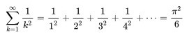
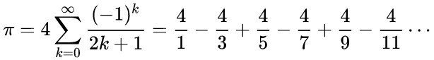
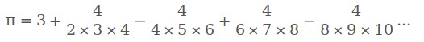

But : traduire des formules en java, écrire des boucles.
On va utiliser diférentes formules permettant de calculer une valeur approchée de pi, que l'on pourra comparer par exemple à la valeur de la constante java.lang.Math.PI : 3.141592653589793.
Formule d'Euler
Leonhard Euler a démontré en 1735 (cf wikipedia) la formule :  Autrement dit, si on appellesomme la somme (1 / 1 2) + (1 / 2 2) + (1 / 3 2) + ...
on a : pi = racine carrée de (6 * somme)
ou en java :
pi = Math.sqrt(6.0 * somme)
Ecrire une classe
Pi1 qui contient :
-
Une fonction
public static double calculePi(int N), oùNest le nombre de termes utilisés dans la somme.calculePi()contient l'implémentation de la formule (effectue le calcul de la somme et renvoie la valeur). -
Une fonction
public static void main(String[] args)qui prend en paramètre le nombre de termes à additionner.main()appellecalculePi()et affiche le résultat.
int à partir de l'argument passé en paramètre (de type String), vous pouvez utiliser Integer.parseInt(args[0]).
Formule de Madhava, Gregory et Leibniz
De la même manière, écrire une classePi2 implémentant cette formule :

Vous aurez éventuellement besoin de la fonction java.lang.Math.pow(double a, double b).
Formule de Nilakantha
De la même manière, écrire une classePi3 implémentant cette formule :

Comparaison
Quelle est la formule qui converge le plus vite ?Pour le savoir, écrivez une classe
Comparaison, avec une fonction main() qui prend toujours en paramètre le nombre d'itérations à effectuer, puis appelez successivement les fonctions calculePi() des 3 classes précédentes.
Comparez chaque résultat avec la valeur de
Math.PI.
Exemple d'affichage :
java Comparaison 10000
Nombre d'itérations : 10000 Math.PI = 3.141592653589793 pi1 = 3.1414971543976273 - différence = 9.549919216578218E-5 pi2 = 3.1414926535900345 - différence = 9.99999997586265E-5 pi3 = 3.141592653590042 - différence = 2.4868995751603507E-13